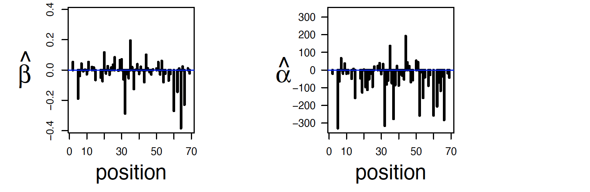
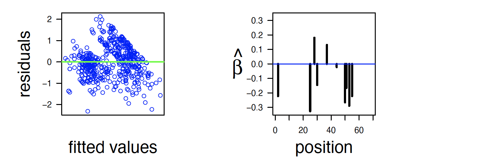
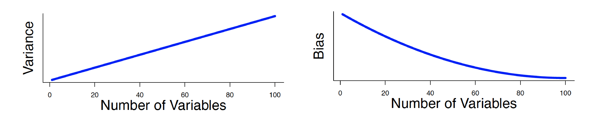
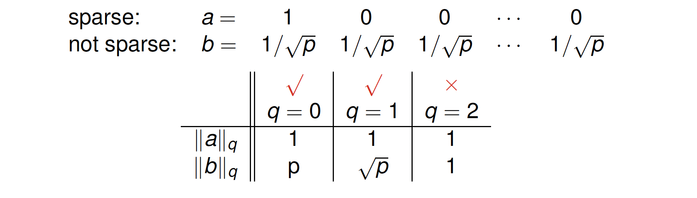
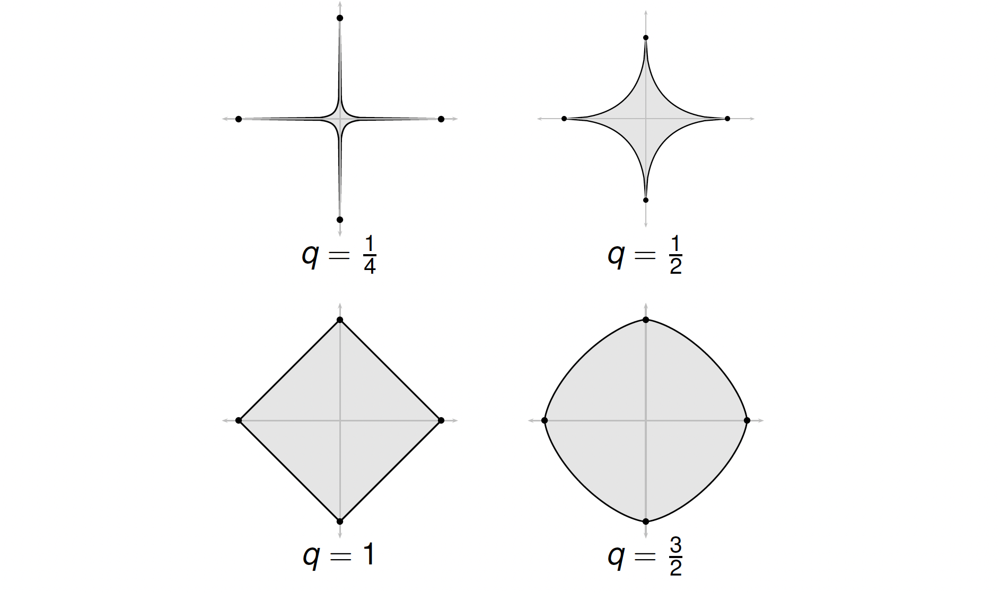
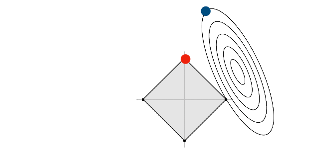
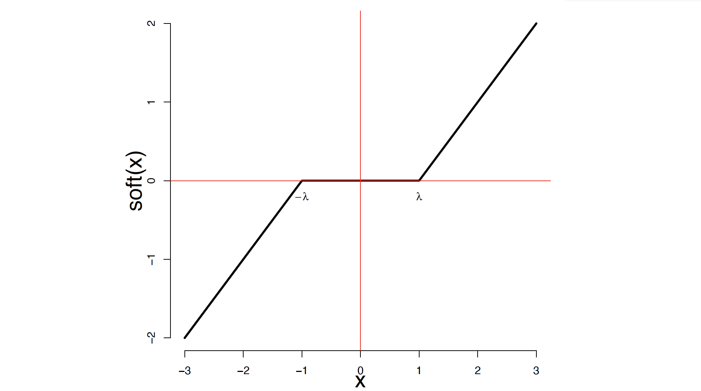

Sparsity Meets Convexity
Here we will talk about basic concepts of regression in sparse data. First of all, let’s define some notations: $D = {(X_1,Y_1), .., (X_n,Y_n)}$ is called training data for pairs of observations $(X_i,Y_i)$. Then $Y_i \in \mathbb{R}$ is the response and $X_i\in \mathbb{R}^p$ is the covariate vector. Sometimes people call the covariate vector the feature vector as well.
The question in a regression problem is that, given a new pair $(X,Y)$ what is our model’s prediction for $X$?
Regression
Let $\hat{Y}$ be a prediction of $Y$.
Then, the prediction error or risk is defined as:
$$ R = \mathbb{E}(Y-\hat{Y})^2 $$
The best preictor is regression function:
$$ m(x) = \mathbb{E}(Y|X=x) = \int yp(y|x) dy $$
But, the true regression function $m(x)$ is unknown and we have to estimate $m(x)$:
$$ \text{prediction risk} = R(\hat{m}) = \mathbb{E}(Y-\hat{m}(X))^2 $$
We need to minimize that risk for a given pair $(X,Y)$. We can alway decompose that risk into two terms:
$$ R(\hat{m}) = \int \text{bias}^2(x) p(x) dx + \int \text{var}(x)p(x) + \sigma^2 $$
where:
$$ \begin{aligned} \text{bias}(x) = \mathbb{E}[\hat{m}(x)] \\\ \text{var}(x) = \text{Variance}(\hat{m}(x)) \\\ \sigma^2 = \mathbb{E}[Y-m(x)]^2 \end{aligned} $$
Therefore, prediction risks = $\text{Bias}^2$ + Variance. Methods with low bias tend to have high variance and methods with low variance will have high bias. For example, if you alwasy predict $m(x) = 0$, your models have $0$ variance but will be terribly biased. Thus, we need to have a balance beween these two.
Bias-Variance Tradeoff
Generally, we need to tradeoff approximation error against estimation error: $$ R(\hat{f}) - R^* = R(\hat{f}) - \inf_{f\in F} R(f) + \inf_{f\in F} R(f)-R^* $$
where $R^*$ is the smallest possible risk and $\inf_{f\in F} R(f)$ is smallest possible risk using class of estimators $F$. Approximation error is a generalization of squared bias and Estimation error is a generalization of variance.
We don’t assume that the true regression function is linear but best linear predictor is:
$$ m(x) = \beta+0 +\beta_1X_1 + … + \beta_pX_p $$
We can also define $X_1=1$ then the predictor will turn into a more convinient form:
$$ m(x) = \beta_1X_1 + … + \beta_pX_p = \beta^T X $$
where $\beta = (\beta_1,..,\beta_p)$ and $X=(X_1,..,X_p)$. For now, let’s assume that $p$ is small. To find a minimizer we need to minimize the training error:
$$ \text{training error} = \frac{1}{n}\sum_{i=1}^n (Y_i-\beta^TX_i)^2 $$
the minimizer $\hat{b}=(\hat{\beta}_1,..,\hat{\beta}_p)$ is called least squares estimator. The least squares estimator is:
$$ \hat{\beta} = (X^TX)^{-1}X^TY $$
where:
$$ X_{n\times p}=\left( \begin{array}{ccc} X_{11} & X_{12} & .. & X_{1p} \\\ \vdots & & & \vdots \\\ X_{n1} & X_{n2}& ..&X_{np} \end{array} \right) $$
and
$Y=(Y_1,..,Y_n)^T$
Then, when we observe a new $X$, we predict $Y$ to be:
$$ \hat{Y} = \hat{m}(X) = \hat{\beta}^TX $$
Proof:
$$ \begin{align} S = &(Y-\hat{Y})^2 \\ =& (Y-E[\hat{y}]+E[\hat{y}]-\hat{Y})^2\\ =& (Y-E[\hat{y}])^2+E[\hat{y}]-\hat{Y})^2 + 2(Y-E[\hat{y}])(E[\hat{y}]-\hat{Y}) \end{align} $$
then:
$$ \begin{align} E[S] = & E[(Y-\hat{Y})^2] \\ =& (Y-E[\hat{y}])^2 + E[E[\hat{y}]-\hat{Y})^2] \\ = & \text{[Bias]}^2 + \text{Variance} \end{align} $$
If you do a bit of calculus:
$$ \begin{align} E[2(Y-E[\hat{y}])(E[\hat{y}]-\hat{Y})] = & 2 (y-E[\hat{y}])(E[\hat{y}]-E[\hat{y}]) \\ =& 0 \end{align} $$
Example 1:
For example, in a HIV resistance dataset, we want to predict $Y$ exhibiting resistence according to $X_j$ which is amino acid in position $j$ of the virus using linear regression.
$$ Y=\beta+0 +\beta_1X_1 + … + \beta_{100}X_{100} + \epsilon $$
Here is $\hat{\beta}$ and marginal regression coefficients. 
Furthermore, $\hat{Y}_i - Y_i$ and a sparse regression – comming up soon – are as follows:

High Dimensional Linear Regression
Now, let’s say $p$ is too large or even is larger than data points. Then the least squares estimator is not defined since $X^TX$ is not invertible.The variance of the least squares prediction is huge. Therefore, we need to increase the bias so that we can decrease the variance.
Ridge Regression
In ridge regression, we minimize the penalized training error:
$$ \hat{\beta} = \arg \min_{\beta} \frac{1}{n} \sum_{i=1}^n (Y_i-\beta^T X_i)^2 + \frac{\lambda}{n} ||\beta||_2^2 $$
where $||\beta||_2 =\sqrt{\sum_j\beta_j^2}$. There is a closed form soloution for this:
$$ \hat{\beta} = (X^TX+\lambda I )^{-1} X^TY $$
the parameter $\lambda$ controls the bias-variance trade-off. When $\lambda=0$ the soloution is the least squres while when it is $\infty$ then $\hat{\beta}=0$.
We can choose $\lambda$ by minimizing prediction risk $\hat{R}(\lambda)$.
To estimate prediction risk, do not use training error:
$$
R_{\text{training}} = \frac{1}{n} \sum_{i=1}^n (Y_i-\hat{Y}_i)^2 , \hat{Y}_i=X_i^T\hat{\beta}
$$
since it is biased: $\mathbb{E}[R_{\text{training}}]< R(\hat{\beta})$. Instead, we use leave-one out cross-validation:
$$ \begin{align} \hat{R}(\lambda) = & \frac{1}{n} \sum_{i=1}^n (Y_i-\hat{Y_{-i}})^2 \\\ = & \frac{1}{n} \sum_{i=1}^n\frac{(Y_i-\hat{Y_i})^2}{(1-H_{ii})^2} \\\ \approx & \frac{R_{\text{training}}}{(1-\frac{p_{\lambda}}{n})^2} \\\ \approx & R_{\text{training}} + \frac{2p_{\lambda}\hat{\sigma}^2}{n} \end{align} $$
where:
$$ \begin{align} H = X(X^TX+\lambda I)^{-1} X^T \\\ p_{\lambda} =\text{trace}(H) = H_{11} + H_{22} + .. + H_{nn} \end{align} $$
Ridge regression will find some values for all predictors while only a small fraction of them are relevant. Do we really want to try all comination of predictors (model selection)? Then the bias is the error due to omitting important variables. The variance is the error due to having to estimate many parameters.

If there are $p$ variables then there are $2^p$ models. In other words, this problem is NP-hard and was a major bottleneck in statistics for many years.
We can breakdown our problem into two ideas:
- Sparsity: Only a few number of predictors are needed to predict.
- Convexity: Replace model search with something easier.
We measure (lack of) sparsity of $\beta = (\beta_1,..,\beta_p)$ with the q-norm:
$$ \begin{aligned} \beta_q = & (|\beta_1|^q+..+|\beta_p|^q)^{1/q} \\ = & (\sum_j |\beta_j|^q)^{1/q} \end{aligned} $$
Let’s take a look at the following example. Which values of q measure (lack of) sparsity?

Lesson 1:To capture sparsity we need to use $q \leq 1$.
Thus, we estimate $\beta = (\beta_1, ..,\beta_p)$ by minimizing:
$$ \sum_{i=1}^n (Y_i - (\beta_0+\beta_1X_{i1}+..+\beta_pX_{ip}))^2 $$
subject to the constraint that $\beta$ is sparse i.e. $||\beta||_q \leq $ small.
If we use $q = 0$ this is same as searching through all $2^p$ models. What does the ${\beta: ||\beta||_q \leq \text{small}}$ look like?
The set of $||\beta_q|| \leq 1$ when $p=2$:

Lesson 2:To capture convexity we need to use $q \geq 1$.
Sparsity meets convexity
We need these sets to have a nice shape (convex). If so, the minimization is no longer NP-hard. In fact, it is easy:
- Sensitivity to sparsity: $q\leq 1$
- Convexity (niceness): $q\geq 1$
This means – according to lessons 1 and 2 – we should use $q = 1$.
Lasso regression:
$$ \hat{\beta} = \arg \min \frac{1}{2n} \sum_{i=1}^n(Y_i - \beta^TX_i)^2 + \lambda ||\beta||_1 $$
where $||\beta||_1 = \sum_j |\beta_j|$.
The results is a vector $\hat{\beta}_1,..,\hat{\beta}_p$ and they are mostly $0$. Magically, we have done model selection without searching (thanks to sparsity plus convexity).
The following figure explains that why most of the coefficients are $0$:

Marriage of sparsity and convexity was one of biggest developments in statistics and machine learning in last 10-20 years.
$\hat{\beta}(\lambda)$ is called the lasso estimator. Then define:
$$ \hat{S}(\lambda) = {j: \hat{\beta}(\lambda) \neq 0} $$
After you find $\hat{S}(\lambda)$, you should re-fit the model by doing least squares on the sub-model $\hat{S}(\lambda)$.
How to choose $\lambda$:
Choose $\lambda$ by minimizing risk estimation:
$$ \begin{aligned} \hat{R}(\lambda) = & \frac{1}{n} \sum_{i=1}^n(Y_i - Y_{-i})^2 \\ = & \frac{1}{n} \sum_{i=1}^n \frac{(Y_i - Y_{-i})^2}{(1-H_{ii})^2} \\ \approx &\frac{1}{n} \frac{RSS}{(1-\frac{s}{n})^2} \end{aligned} $$
where $H$ is the hat matrix and $s = \sharp \{j:\beta_j \neq 0\}$. Then, $\hat{Y} = X^T\hat{\beta}$.
Minimize loss via coordinate descent
To minimize $ \frac{1}{2n} \sum_{i=1}^n(Y_i - \beta^TX_i)^2 + \lambda ||\beta||_1$ using coordinate descent do the following steps:
- set $\hat{\beta} = (0,..,0)$ then iterate the following
- for $j=1,..,p$:
- set $R_i = Y_i - \sum_{s\neq j} \hat{\beta_s} X_{si}$
- set $\hat{\beta}_j$ to be least squares fit of $R_i$s on X_j
- set $\hat{\beta_j} = Soft_{\lambda_j}(\hat{\beta_j} )$ where $\lambda_j = \frac{\lambda}{\frac{1}{n}\sum_i X_{ij}^2}$
Where $Soft$ is soft thresholding function:

Then use least squares $\hat{\beta}$ on selected subset $S$.
We covered this post in the intermediate machine learning SDS 365/565, Yale University, John Lafferty where I was TF.